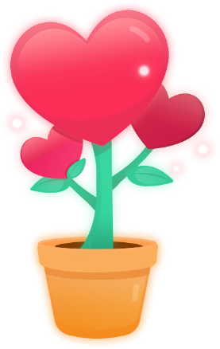

마음 화분
마음 달력에 붙인 마음 스티커에 따라 화분의 모습이 달라집니다.
그에 따라 자신의 감정에 대한 이해도가 높아지는 과정을 경험할 수 있습니다.
마음 달력에 붙인 마음 스티커에 따라 화분의 모습이 달라집니다.
그에 따라 자신의 감정에 대한 이해도가 높아지는 과정을 경험할 수 있습니다.
서비스 알아보기
한 달이 지나면 또 다른 특별한 화분의 모습을 만날 수 있습니다.
마음 달력에서 한 달동안 붙인 마음 스티커의 결과를 합산하여,
달마다 총 5단계 중 적절한 화분의 모습을 보여줍니다.


일랑톡톡은 감정에 대한 이해가 부족하고, 적절한 감정 표현에 서툰 아이들에게
아이들 스스로가 느끼고 있는 감정에 대해 이해하고 명확히 표현할 수 있게 도와줍니다.